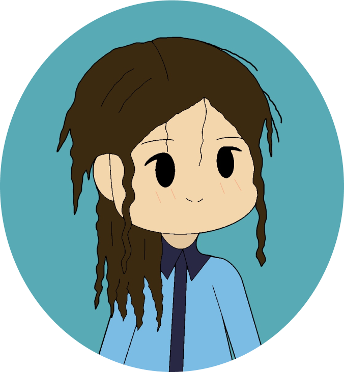

Hi, I'm Dvash!
I am a Multimedia Designer,
proficient in Web Design and Graphic Design.
Projects


Visual Studio Code
Figma
Github

Adobe Illustrator

Adobe Photoshop
Adobe InDesign
Adobe Priemere Pro
Adobe Animate

Procreate
Canva